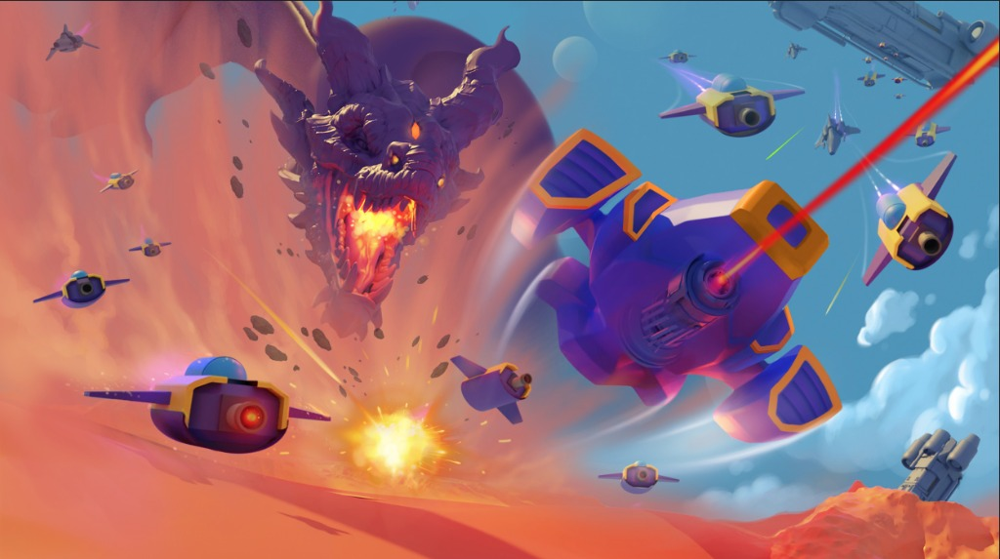

01 — PROJECT INFO
Starquest
A mobile sci-fi top-down shooter built on high-contrast ship silhouettes, saturated VFX, and nebula-scale deep space environments.
Starquest is a mobile sci-fi top-down shooter developed at Cosmic Game, demanding production-ready concept art across an expansive suite of ship designs, environmental hazards, VFX systems, and narrative world-building assets. As Lead Concept Artist, the core challenge was readability at small screen scale — every silhouette, projectile trail, and energy burst was engineered for instant recognition on mobile viewports through high-contrast forms and vibrant nebula-themed palettes. Deliverables spanned a modular ship-building system with tiered weapon upgrades, diverse environments from planetary surfaces to debris fields, pilot equipment, turret systems, and chapter-spanning world-building concepts.
ROLE
Lead Concept Artist
YEAR & STATUS
2020 · Production Concept Art
GAME STUDIO
Cosmic Game
PLATFORM
Mobile (iOS & Android)
02 — CORE DIRECTIVE
“How do you engineer an expansive sci-fi universe of capital ships, alien hazards, and modular systems so that every asset reads instantly on a palm-sized mobile screen?”
Silhouette-First Morphology
Calibrating vessel profiles, alien weakpoints, and hazard boundaries as bold high-contrast shapes that register in half a second under mobile ambient lighting.
Hazard Density Escalation
Mapping chapter campaigns across escalating difficulty tiers, communicating rising threat levels through debris density and atmospheric hostility without reskinning.
Interchangeable Hull Architecture
Unifying hard-surface industrial frames with organic xenotech elements so players can recombine modular upgrades and maintain visual coherence.
GAME STUDIO
Cosmic Game
PLATFORM
Mobile (iOS · Android)
ROLE
Lead Concept Artist
World-Building Lead
03 — PIPELINE
Software & Tools
Photoshop / Digital Painting
Ship Silhouettes · World-Building Sheets · VFX Trajectory Passes · Cinematic Matte Art
ZBrush / 3D Ideation
Hard-Surface Vessel Chassis · Alien Creature Morphology · Dynamic Perspective Blockouts

04 — VESSEL DESIGN & HANGAR SYSTEMS
Capital Ships & Modular Hulls
Capital-class destroyer vessels, mobile hangar customizers, orbital satellites, and modular hulls engineered for rapid weapon slotting.


.webp)

05 — ARSENAL & COMBAT GEAR
Pilot Gear, Weaponry & Ground Units
Precision military hardware: pressurized flight helmets, heavy energy sidearms, defensive turret emplacements, and autonomous combat chassis.


06 — PROJECTILE VFX & WEAPON TELEMETRY
Saturated Ballistics & Energy Bursts
Mobile bullet-hell projectile silhouettes: distinct color-coded frequencies, plasma arcs, dark matter bursts, and heat-wave telegraphs.


.webp)


07 — WORLD-BUILDING & HAZARD ESCALATION
Planetary Warzone Escalation
Campaign chapter progression sheets, perimeter barrier walls, planetary surface encampments, and alien wreckage defining the hostile frontier.


08 — MOBILE HEURISTICS & SCALE TESTING
Designed for the Palm of Your Hand
Mobile top-down gameplay demands visual hierarchy that survives extreme miniaturization and ambient screen reflections across varied hardware.
Sub-Second Silhouette Read
Every vessel hull, hazard boundary, and projectile trail was evaluated as pure flat black silhouette before color or texture passes were applied.
Vibrant High-Contrast Chroma
Saturated neon purples, glowing ambers, and electric cyans engineered to retain clear value contrast even under direct sunlight on mobile viewports.
Modular Recombination Tolerance
Weapon hardpoints and chassis sockets share normalized scale anchors, ensuring player customization builds look cohesive regardless of tier combinations.
09 — PRODUCTION OUTCOME
What Shipped, and What Held Up
Unified Concept Library
Delivered over 40 production sheets encompassing capital vessels, turrets, environmental boundaries, projectile systems, and pilot gear.
Scalable Campaign Progression
The multi-tiered warzone system allowed level designers to scale hazard density across chapters without duplicating art production costs.
Cross-Pollinated Art Direction
Blending industrial hard-surface engineering with organic xenotech created a distinct visual identity that set Starquest apart in the mobile space.
10 — REFLECTION
What Mobile Scale Taught Me About World-Building
Designing for mobile forces absolute clarity: you cannot hide weak shape language behind dense photorealistic textures or soft atmospheric fog. If a silhouette doesn't tell the player who is shooting, what direction danger is coming from, and where it is safe to fly in less than a second, the art fails gameplay. That discipline has defined every project I have directed since.